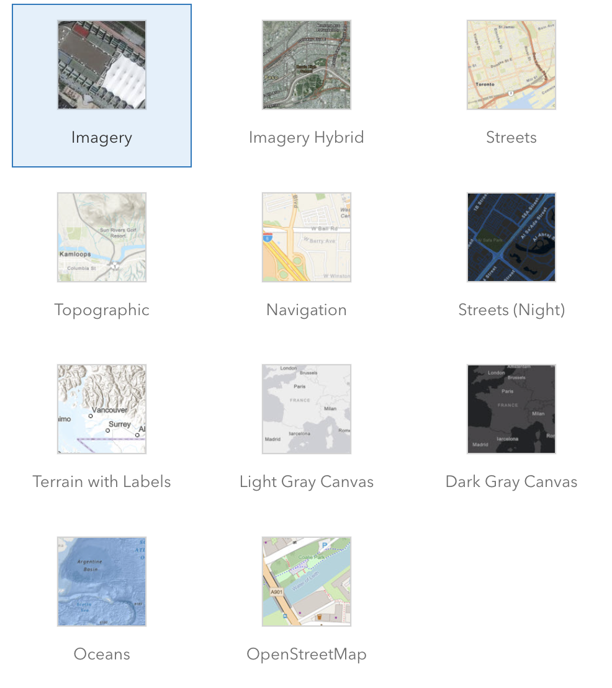

ArcGIS JS API for JavaScript:
3D Visualization
Arno Fiva, Grete Soosalu & Jesse van den Kieboom
Slides:
http://bit.ly/abc123
Session outline
-
Core concepts - 15 min
- Setting up a 3D application
- Sources of data
- Layer symbology
-
Coding demos - 30 min
- Data-driven thematic visualizations
- Realistic 3D data
- Combining realistic and data-driven visuals
-
Q & A - 15 min
- Sli.do
Core concepts
Getting started with 3D
Setting up a 3D application
<html>
<head>
<meta charset="utf-8" />
<meta name="viewport" content="initial-scale=1,maximum-scale=1,user-scalable=no" />
<title> </title>
<style>
html,
body,
#viewDiv {
padding: 0;
margin: 0;
height: 100%;
width: 100%;
}
</style>
<link rel="stylesheet" href="https://jsdev.arcgis.com/4.23/esri/themes/light/main.css" />
<script src="https://jsdev.arcgis.com/4.23/"></script>
<script>
require(["esri/Map", "esri/views/SceneView"], (Map, SceneView) => {
const map = new Map({
basemap: "topo-vector",
});
const view = new SceneView({
container: "viewDiv",
map: map,
});
});
</script>
</head>
<body>
<div id="viewDiv"></div>
</body>
</html>
Setting up a 3D application

Setting up a 3D application
Setting up a 3D application
const map = new Map({
qualityProfile: "high",
basemap: "oceans",
ground: "world-elevation",
});
Setting up a 3D application
const map = new Map({
qualityProfile: "high",
basemap: "oceans",
//ground: "world-elevation",
ground: "world-topobathymetry",
});
Setting up a 3D application
const view = new SceneView({
container: "viewDiv",
viewingMode: "local",
map: map,
});
Setting up a 3D application
const clippingExtent = {
spatialReference: {
latestWkid: 3857,
wkid: 102100,
},
xmin: -13045241.329652093,
ymin: 4036780.474001343,
xmax: -13045119.666179948,
ymax: 4036937.733336518,
};
const view = new SceneView({
container: "viewDiv",
viewingMode: "local",
clippingArea: clippingExtent,
map: map,
});
Core concepts
Sources of data
Sources of data
-
ArcGIS Online
- Living Atlas – worldwide data

Sources of data
const layer = new FeatureLayer({
url: "https://services.arcgis.com/P3ePLMYs2RVChkJx/arcgis/rest/services/USA_Major_Cities/FeatureServer"
});
const map = new Map({
basemap: "gray-vector",
ground: "world-elevation",
layers: [layer]
});
const layer = new FeatureLayer({
portalItem: {
id: "85d0ca4ea1ca4b9abf0c51b9bd34de2e"
},
});
const map = new Map({
basemap: "gray-vector",
ground: "world-elevation",
layers: [layer]
});
Sources of data
-
ArcGIS Online
- Living Atlas – worldwide data
- Upload your own

Sources of data
-
ArcGIS Online
- Living Atlas – worldwide data
- Upload your own
- Create your own data with the editing widget

Sources of data
-
ArcGIS Online
- Living Atlas – worldwide data
- Upload your own
- Create your own data with the editing widget
-
Other open data sources
in formats such as:- GeoJSON
- WFS
- CSV
- OGC features

Core concepts
Layer symbology
Layer symbology: Flat vs volumetric
Layer symbology
const layer = new FeatureLayer({
url: "https://services.arcgis.com/P3ePLMYs2RVChkJx/arcgis/rest/services/USA_Major_Cities/FeatureServer",
renderer: new SimpleRenderer({
symbol: new PointSymbol3D({
symbolLayers: [
new ObjectSymbol3DLayer({
width: 10000, // diameter of the object from east to west in meters
height: 50000, // height of the object in meters
depth: 10000, // diameter of the object from north to south in meters
resource: { primitive: "cylinder" },
material: { color: "red" }
})
]
})
})
});
const map = new Map({
basemap: "gray-vector",
ground: "world-elevation",
layers: [layer]
});
Layer symbology: Lines
let stripPath = {
type: "line-3d", // autocasts as new LineSymbol3D()
symbolLayers: [{
type: "path", // autocasts as new PathSymbol3DLayer()
profile: "quad", // creates a rectangular shape
width: 20, // path width in meters
height: 5, // path height in meters
material: { color: "#ff7380" },
cap: "square"
}]
};
const symbol = {
type: "point-3d", // autocasts as new PointSymbol3D()
symbolLayers: [{
type: "object", // autocasts as new ObjectSymbol3DLayer()
width: 5, // diameter of the object from east to west in meters
height: 20, // height of the object in meters
depth: 15, // diameter of the object from north to south in meters
resource: { primitive: "cylinder" },
material: { color: "red" }
}]
};
Layer symbology: 3D-specific data types
- 3D object scene layer
- Building scene layer
- Integrated mesh layer
- Point cloud layer
3D-specific data types: 3D object scene layer
Add texture layer
Add outlines
const renderer = {
type: "simple", // autocasts as new SimpleRenderer()
symbol: {
type: "mesh-3d",
symbolLayers: [
{
type: "fill",
material: {
color: "#ffffff",
colorMixMode: "replace"
},
edges: solidEdges
}
]
}
};
Color by attributes instead
Coding demos
3D visualization use cases
Data-driven thematic visualizations
Realistic 3D data
Combining realistic and data-driven visuals